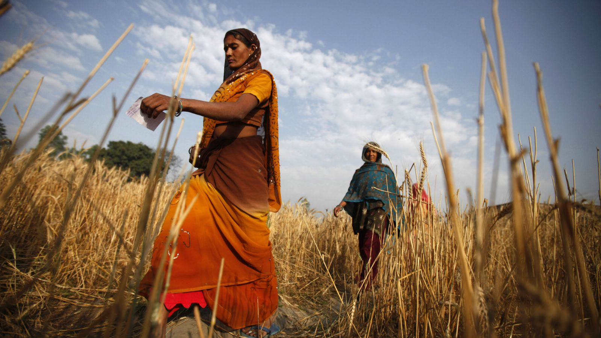
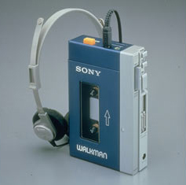
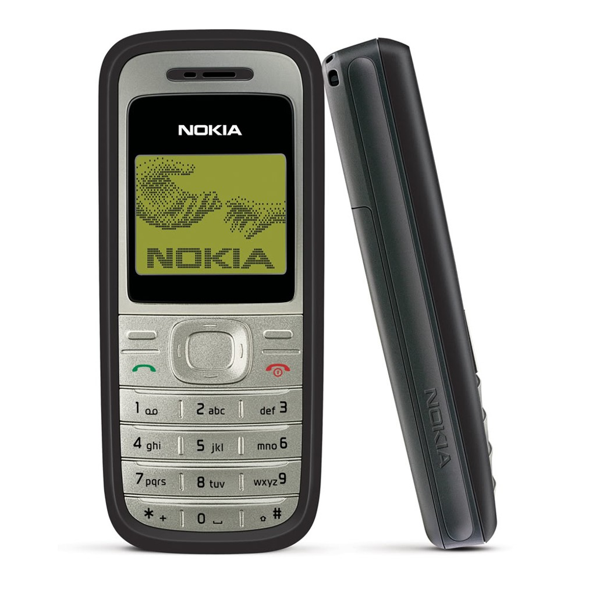
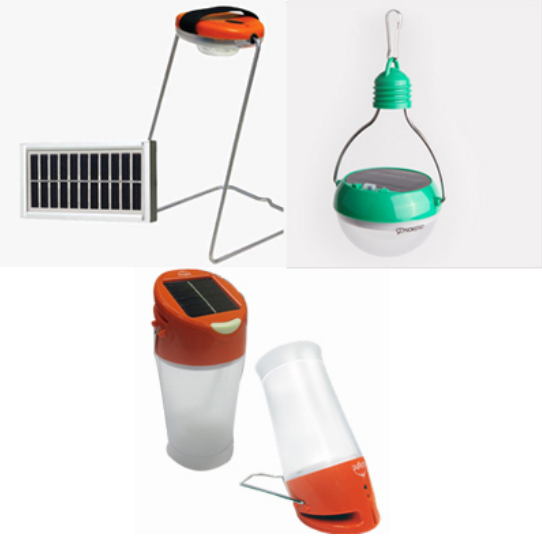
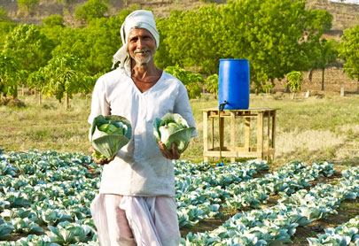

Product Design as Strategy to Promote Economic Growth and Raise Living Standards in Developing Countries
(AP Photo/Altaf Qadri)
An examination of design from an anthropological and sociological perpsective
Originally written: Nov 15th, 2015
Dissertation for the Course: Contextual Nature of Products
The original dissertation has been reformatted for this blog entry.
For the .PDF file of the essay, as well as works cited:
ABSTRACT
Design is commonly used as an effective strategy to promote growth in mature businesses and thus the wider economy. This strategy may be even more effective when used to promote economic growth and living standards in developing countries, thus help alleviating poverty. Furthermore, design also helps generates benefits of non-monetary value such as the development of its culture, values, and sustainability on a national level. Developing countries such as China and India are beginning to invest in design, acknowledging it as an effective strategy to guide their nations towards stronger economy and identity. Its effectiveness can be seen in successful cases such as Japan’s electronic industry during the 1960s. Design’s benefits can also be seen on a local level as multi-national companies expands to market to the poorest population at the base of pyramid in developing countries, boosting local industries, increasing employment opportunities, and raising living standards.
WHAT IS PRODUCT DESIGN, AND WHAT ARE ITS BENEFITS TO QUALITY OF LIFE AND ECONOMY?
Industrial design, or product design, specifically, is defined “design strategies, development and styling – everything that takes place prior to production or implementation of products” (Danish Design Centre, 2003). Contrary to industrial engineering, it is a creative process which focuses on satisfying the users’ needs. This includes identifying the marketability of the product before designing it appropriately for the identified target market. Factors include the products’ ergonomics, psychological interaction with the user, innovative use of technologies and materials, and its manufacturability. These design decisions guide the products’ business strategy formulation, playing a significant role in the effective application of innovation for the market (Athavankar, 1992).
Design can be considered as one of the more significant factors to “product success”: businesses that adopts design as part of their business model generates more income and exports compared to businesses that do not. This has been wide knowledge in Western Countries including North America and Europe as proven by the sharp increases of industrial designers in the working force in the past few years according to Statistics Canada as of February 2014. The economic success of these companies promotes subsequent macroeconomic growth within the nation, thus raising living standards of citizens as per real GDP per capita and other qualitative means of measurement within the country or countries affected. Innovation in design and technology is often seen as the biggest boost of GDP while the inputs, capital and labor, remains unchanged. This approach may be even more effective for developing countries as means to raise living standards and help alleviate poverty; each percentage of increase of real GDP yields a higher increase in the poor population’s income compared to the rest of the nation (Bleany & Nishiyama, 2004).
According to the United Nations Statistical Yearbook (2001), all countries other than Japan, Australia, New Zealand, and those in North America, Europe, and the former U.S.S.R. are considered developing countries. There is no common agreement even in the United Nations system when classifying the stage of development reached by a nation, though they are generally put within this group based on its standard of living quantified by its GDP per capita if under a certain amount (Sanford, 2003). Those considered impoverished are those with income below the poverty line, or those at the “Base of Pyramid.” The quantity where the poverty line lies varies slightly with each nation. For example, Canada’s standards for poverty may be considered well for India’s standards, but it is the most standard for measuring income levels.
COUNTRIES USING DESIGN AS A SOLUTION
The Chinese government has acknowledged the important role design can play for its
developing economy. As its economy begins to mature in the recent years, its government is now
making large investments in design and innovation with goals to stimulate economic growth
(Lorraine 2012). They also hope this investment will establish China as a global creative power and driver of culture and innovation on a global scale (Lorraine 2012). China’s massive growth
in GDP since its 1978 open-door policy has been heavily dependent on investment expansion in
infrastructure and processing trade in labor, with its main competitive strength being its low cost;
there is a significant lack in high-level elements such as R&D, product design, marketing, and
supply chain management (Yongnian & Tong, 2014). Since Chinese manufacturing is slowly
losing its competitive edge in low cost, their GDP growth rate has been staggering. The
government hopes that their investments in industrial design talent will restore its global
competitiveness and perhaps surpass developed countries such as the US in the near future.
(Yali, 2012).
India has also been investing in their design industry as a strategy to establish their national competitiveness in manufacturing and service industries, ultimately promoting growth in its national economy and improving its citizen’s living standards. This is marked by the establishment of the National Design Policy in 2007 and the establishment of Indian Design Council in 2009 by the Indian Government. Increasing amounts of design education institutions has also been established to train and educate design talent within the nation (IDC, 2010). With an estimated 35% of India’s population falling below the poverty line according to unreleased data from the first Socio Economic and Caste Census (SECC) (Nair, 2015), they find design to be the “perfect response to bind people together and to elevate human life through harmonious synchronization of needs and solution” (IDC 2010). Though the design industry is still infantile, their investment in the development of a design industry will guide India towards macroeconomic growth and reduction of poverty.
JAPAN'S ELECTRONIC INDUSTRY AS CASE STUDY
The original Sony Walkman, debut in 1979. Listed as Time's most influential gadgets and gizmos.
A successful case of effective application of design would be Japan’s consumer electronics industry in the 1960s. Japan is now considered a developed country with strong cultural profile but also a giant in exports of information and communications technology (ICT) goods. Japan’s GDP went from 44.3 billion to 5.3 trillion USD from 1960 to 1995 according to OECD. This achievement can be credited to its design innovation of portable consumer electronic goods. The success of their consumer electronic goods was not due to their lower price or higher performance, but the compactness and portability of the products that met the user needs of the American population in the 60s (Athavankar 1992). According to an 1982 archived business briefing on Japanese electronics, Japanese electronics giants such as Matsushita and Sony’s sales reached $14.4 billion and $4.8 billion (as per 1981 USD), with 45 and 75 percent of their revenues from foreign sales, respectively, in 1981 (Schumpter 2014). An example of such electronics would be the Sony Walkman, which was introduced in 1979 and now listed as one of “TIME’s most Influential Gadgets and Gizmos.” This product was not a leap forward in engineering as the magnetic cassette technology has existed since 1963, but its innovation in redesign for portability has fundamentally changed how people experienced music (Haire, 2009). A large portion of the profits were reinvested into research and design for product innovation. Thus, by 1990s, Japan was the largest exporter of ICT goods (Rosell, 1995), with its consumer electronics goods occupying 80 percent of the market (Athavankar, 1992). It now ranks fourth place behind the US, China, and Korea in listed order for ICT exports (OECD Factbook, 2013), as the mentioned nations begin to invest in similarly in the recent decades.
DESIGN FOR THE BASE OF PYRAMID TO HELP ALLEVIATE POVERTY
Design is an effective strategy for the expansion of multinational organizations as they
seek to reach the population at the base of pyramid, promoting growth in local industries,
creating new job opportunities, and raising overall living standards of the people in their target
market. This is done while the organization gain profit themselves. According to Werhane, the
traditional method of relying on foreign aid and philanthropy to help alleviate poverty in developing countries is flawed (2009). Instead, initiatives can be done by multinational
organizations to seek profitable partnerships with the poor for mutual gain (Ramirez 2010).
Although individual consumers at the base of pyramid have limited buying power, the sheer size
of this market makes it an attractive business opportunity to many businesses (Austin-Breneman
& Yang, 2013). It is estimated that the “4 billion people who have an income of $2 or less a day
represent approximately 5 trillion in purchasing power parity” (Prahalad, 2009). It is suggested
that serving to the needs of micro-entrepreneurs among the population at base of pyramid may be
the best strategy to tap into these markets. Micro-entrepreneurs, who represent a large portion of
the population, are individuals who generates small amounts of income from their own
businesses, and is considered the key to create sustainable economic development within the
local economic scene (Austin-Breneman & Yang, 2013). Investing in the organization’s products
will allow the micro-entrepreneurs to generate revenue, which, in turn is used to purchase more
products from the organization for more profit. This creates a “business-to-business” transaction
rather than the traditional “business-to-consumer” transaction, and allows continuous mutual
profit (Austin-breneman & yang, 2014). The increasing wealth of micro-entrepreneurs will then
increase local circulation of assets, boosting its economy and will positively impact the living
conditions of the rest of the population. Products distributed by these organizations can also be
designed specifically to help living conditions of the population, to positively influence the
environment, or to take advantage of local networks to further promote macroeconomic growth.
It should be highlighted that the key to this strategy is to serve the unmet needs among the microentrepreneurs;
Organizations must appropriately design their products to suit the needs of the
local market to achieve success (Athavankar 1992).
Design plays a crucial role in properly marketing towards these emerging markets in order to achieve product success. Designing for the users when separated geographically can prove to be quite difficult, as less than half of the companies entering these markets meet their own goals, compared to the mere 33% new product failure rate in mature markets (Austinbreneman & yang, 2013). In this case, the main cause of product failures can be attributed to simply the fundamental misunderstanding of the users in developing countries (Ramamurti, 2008). For example, in Kellogg’s attempt to introduce breakfast cereal to the rural Indian market in 1994, they assumed that Indian consumers would use cold milk like in western countries. However, Indian consumers paired the cereals with warm milk, resulting in a deterioration from its intended user experience (Austin-breneman & Yang, 2013). Such cases of failure can be avoided with proper market research, with significant benefits to both the seller and consumer, as illustrated by the following examples.
CASE STUDY 1: NOKIA
Nokia's most popular model in these emerging markets, the Nokia 1200
Nokia’s cellphones designed towards emerging markets in developing countries is an example of the effectiveness of appropriate design and business strategy. In 2009, 35% of their total sales were from these markets (Kang, Place, & Seyler, 2009). Many of their products were used by micro-entrepreneurs as mobile pay phones to rent out to the rest of the community when infrastructure lacks other means of communication. Nokia invested heavily in understanding local needs, and designed their most popular model, the Nokia 1200 to satisfy that. It is designed to be higher quality and more durable than competitive models, being dust repellent and having grips for high-humidity environments such as India (Kang, Place, & Seyler, 2009). The company also invested heavily in building distribution and retail networks which also serves as a service network to reach rural Indian customers. They put much emphasis in building strong relationships with local retailers to further expand their distribution and service network (Kang, Place, & Seyler, 2009). The major competitive advantage of Nokia’s phones, however, is its multi-functionality. It has a built in radio receiver, LED flash light, and UI enabling it to be used as a shared-phone among multiple individuals. Its UI has 80 languages, multiple contact lists, and a prepaid usage tracker which tracks the amount airtime and price of each call. Since most consumers would not be able to afford it if it were a personal cellphone, this design decision was pivotal in their product’s success. This also attracts micro-entrepreneurs to invest in these phones to repurpose as rental phones (Austin-breneman & Yang, 2013). Nokia made sure to educate the micro-entrepreneurs their products’ various technical capabilities, and how it will allow the micro-entrepreneurs to generate greater income (Austin-breneman & Yang, 2013). This successful business venture was not only profitable for Nokia, but it promoted economic growth within the Indian market by creating a whole industry in cellphone rental service. Furthermore, it allowed the citizens to be able to communicate via mobile networks in rural areas where no other option was previously available. In fact, SECC data shows that a surprising 71% of the rural India population has access to a mobile phone as of 2015 (Katyal).
CASE STUDY 2: SOLAR LIGHTING TECHNOLOGIES
Clockwise from top left: the Greenlight Planet Sun King Pro, Nokero N200, and the D.Light S10
The introduction of Solar Lighting technologies specifically designed for developing countries is another great example. According to a joint International Finance Corporation and Bank report, “590 million people are not connected to their national grid in Africa alone” and that “many users rely on flame based technologies, such as paraffin lamps, for lighting” (Baker & Alstone, 2011). Companies such as D. Light Design, Greenlight Planet, and Nokero have identified this user need and have provided reliable solar lighting technologies in such off-grid areas. Their users includes many micro-entrepreneurs such as shop owners to keep their shop open at night or to use as aid in advertisements, and rental service providers that rent out the lighting units for lighting and solar charging for cellphones (Baker & Alstone, 2011). Their products’ success can be credited to its emphasis on designing for durability and longevity. Customers are reportedly highly risk-averse to product failure, and is willing to invest more for a longer-lasting product (Baker & Alstone, 2011). In fact, according to the Lighting Africa Survey, these products range from $15-25, which was “a large portion of the average $125 monthly income for a family of four” (Baker & Alstone, 2011). As such, the products offered includes features such as rain-resistant housings, robust circuitry for longer performance, and strengthened glass panel face. Users also preferred multi-functionality in their products, as they reportedly “only have one or two lighting devices but more places to light” (Baker & Alstone, 2011). Locations include the till, storerooms, product shelves and the storefront. Thus, companies responded by including handles which function as stands or hooks for different user cases (Austin-breneman & Yang, 2013). Some units even included ports to charge cellphones, which was a highly valued feature, with some product designs to switch entirely from solar lanterns to solar charging to cater to this need. By establishing brand reliability, companies found considerable success even with products at relatively high price points. For example, D. Light sold over 220,000 units by the end 2010 (Austin-breneman & Yang, 2013). According to Lighting Africa report, these lighting products has provided “savings in operating costs, ancillary benefits to education,” and has had “impact on escaping poverty” (Baker & Alstone, 2011). The introduction of these products created new businesses and increased efficiency on already existing ones, promoting economic growth in African countries. They also provide reliable lighting for a variety of user cases, raising the quality of life for their end users.
CASE STUDY 3: DRIP IRRIGATION SYSTEMS
Jains Ltd.'s drip irrigation system, with a focus on small farmers with constraints in water and land.
Other micro-entrepreneurs, such as the farmers in rural India, has also gained immense benefit from similar business models as efficient drip irrigation systems become available to them. Drip irrigation is a method to deliver small amounts of water directly to the base of each plant in a field using a system of tubes and emitters. These systems have exploded in popularity as it increases crop yield and water use efficiency, which is crucial especially in areas where water management is a concern (Postel, Polak, Gonzales, & Keller, 2001). Much of the success can be credited to the design of their products that met the farmers’ user needs. Depending on the crop, it can increase yield from 5-50%, averaging at 30%, and uses 50-60% less water (Postel, Polak, Gonzales, & Keller, 2001). Other factors contributing its success is its ability to operate without electricity or diesel pumps, further cutting down costs, and its design to be modular and expandable, allowing farmers to appropriately size or increase the size of the system according to their plot (Postel, Polak, Gonzales, & Keller, 2001). Companies such as Jain Irrigation Ltd’s reaped the benefits of this growth, as their revenue from such products has quadrupled from 2007- 2011 (Postel, Polak, Gonzales, & Keller, 2001). Jain Irrigation also provides business and agricultural support for free to ensure that their customers gain greatest possible economic benefit (Austin-breneman & Yang, 2013). Other competitive drip irrigation companies such as IDEI and John Deere & Netafim also provide similar products and services, each achieving credible product success (Austin-breneman & Yang, 2013). By meeting the user needs of the farmers, drip irrigation companies have experienced rapid growth, allowing both themselves and the end consumers to mutually profit. Higher crop yield also means more exports for India’s trade. Not only does this promote macroeconomic growth as a whole, but the introduction of drip irrigation system also raises quality of life qualitatively by simplifying a portion of the farmers’ job, increasing their efficiency and making the working experience more pleasant.
CONCLUSION
Product design is a viable strategy to promote macroeconomic growth. Its crucial role in
development is acknowledged and already adopted both as national government policies to
increase GDP and living standards in many nations. It is also adopted locally by mature businesses seeking to gain a competitive edge. It allows organizations to create profitable
partnerships with micro-entrepreneurs in developing countries, stimulating the mentioned
developing nations’ macroeconomic growth and helping to alleviate poverty. Design is usually
under-accounted for as it also accounts for much of its qualitative benefits such as development
of culture, values, and positive environmental impact within a nation. It is a necessary driver for
a nation’s development towards stronger culture, economy, and innovation.
The original dissertation has been reformatted for this blog entry.
For the .PDF file of the essay, as well as works cited: